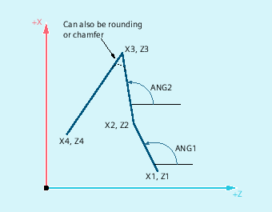

| Note |
|
In the following description it is assumed that:
|
The end point of the first straight line can be programmed by specifying the Cartesian coordinates or by specifying the angle of the two straight lines. The end point of the second and third straight lines must always be programmed with Cartesian coordinates. The intersection of the straight lines can be designed as a corner, a curve, or a chamfer.
ANG1: | Angle of the first straight line |
ANG2: | Angle of the second straight line |
X1, Z1: | Start coordinates of the first straight line |
X2, Z2: | End point coordinates of the first straight line or |
X3, Z3: | End point coordinates of the second straight line or |
X4, Z4: | End point coordinates of the third straight line |
| Note |
The programming described here for a three point contour definition can be expanded arbitrarily for contour definitions with more than three points. |
Syntax
Programming of the end point of the first straight line by specifying the angle
Corner as transition between the straight lines:
| ANG=… | |
| X… Z… ANG=… | |
| X… Z… |
Rounding as transition between the straight lines:
| ANG=… RND=... | |
| X… Z… ANG=… RND=... | |
| X… Z… |
Chamfer as transition between the straight lines:
| ANG=… CHR=... | |
| X… Z… ANG=… CHR=... | |
| X… Z… |
Programming of the end point of the first straight line by specifying the coordinates
Corner as transition between the straight lines:
| X… Z… | |
| X… Z… | |
| X… Z… |
Rounding as transition between the straight lines:
| X… Z… RND=... | |
| X… Z… RND=... | |
| X… Z… |
Chamfer as transition between the straight lines:
| X… Z… CHR=... | |
| X… Z… CHR=... | |
| X… Z… |
Meaning


| Note |
For further information on the programming of a chamfer or rounding, see " Chamfer, rounding (CHF, CHR, RND, RNDM, FRC, FRCM) ". |
Example
| Program code | Comment |
|---|---|
| N10 X10 Z100 F1000 G18 | ; Approach the starting position |
| N20 ANG=140 CHR=7.5 | ; Straight line with angle and chamfer specification. |
| N30 X80 Z70 ANG=95.824 RND=10 | ; Straight line to intermediate point with angle and chamfer specification. |
| N40 X70 Z50 | ; Straight line to end point. |